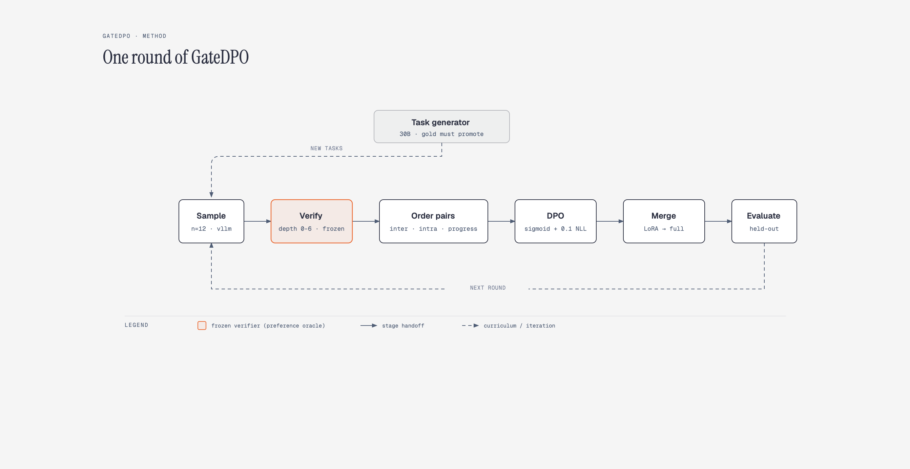
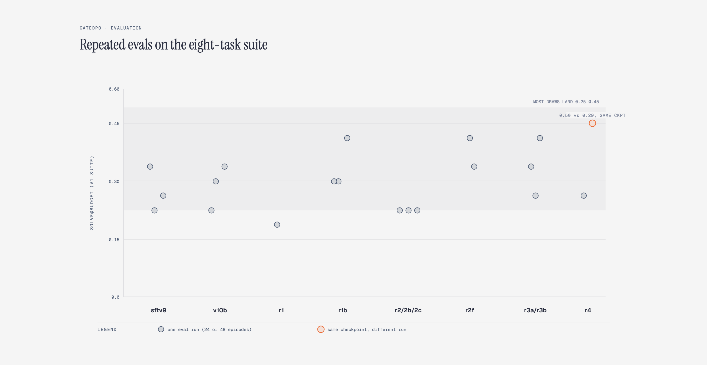
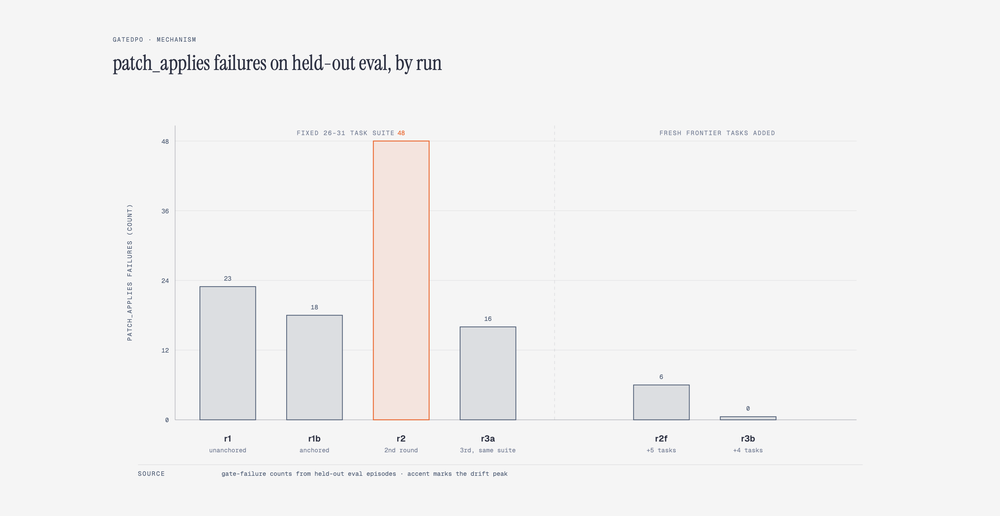
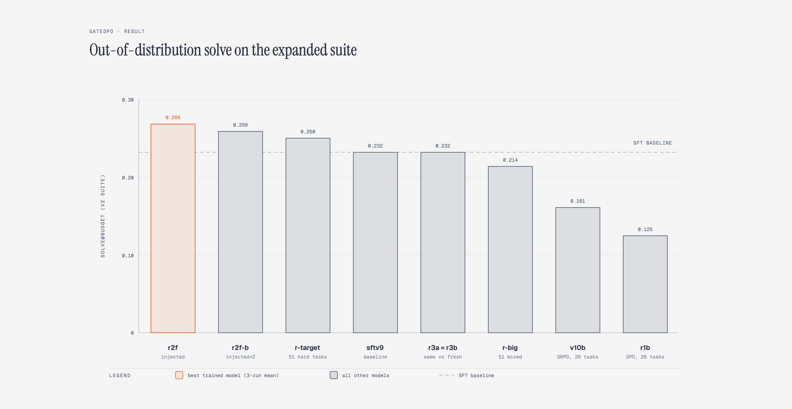

I have trained this model family three ways now. SFT taught it to imitate verified patches. GRPO taught it from a scalarized reward built out of the verifier's gate outcomes. What I had not tried, and what sat oddly unexamined in the lineage, was the simplest preference method of them all: DPO. Not because anyone doubted it would run, but because nobody had asked what the verifier's structure looks like when you feed it to a preference learner instead of a policy gradient.
The reason to ask is specific. PatchProof does not
return a reward. It returns a partial order: every candidate repair walks a fixed chain of hard gates
(scope_guard, patch_applies, python_ast, secret_scan,
visible_tests, release_gate_regressions, promote), and it dies at exactly
one of them. GateGRPO flattens that structure into a
scalar, which is how you end up with a training log where 65% of GRPO steps produce groups with zero advantage:
two candidates that both die at the visible_tests gate get the same reward, even if one failed five
tests and the other failed one. Depth and sub-evidence are real ordering information that scalarization throws
away.
So GateDPO asks the question directly: sample candidates, sort them by how deep they survive inside the verifier, and train DPO on the resulting pairs. Then ask the harder question on top of it: if each new round regenerates pairs from the model's own current failures, does the failure frontier march? The honest answer, after thirteen training runs and more than fifteen hundred held-out evaluation episodes, is that the first part works and the second part does not, and that the reason it does not is more interesting than either.
One GateDPO round is a loop with five stages. The policy samples twelve first-turn repair candidates per task, plus four evidence-conditioned second-turn samples for every candidate that failed with verifier feedback attached. Each candidate runs the frozen gate chain and gets a depth between zero and six, where six means promoted. The pair builder then constructs three kinds of preference pairs: inter-gate pairs that prefer a deeper survivor over a shallower one, intra-gate pairs that prefer the same depth but better sub-evidence (fewer failing tests, a closer string match), and progress pairs that prefer a second turn which advanced depth over one that stalled on the same evidence. DPO trains on those pairs with a small chosen-NLL anchor, the adapter merges, and the merged policy becomes the next round's sampler.

Two design choices are worth stating before the results, because the results only make sense with them.
First, the anchor. Plain sigmoid DPO at 1.5B parameters degenerates: the model learns to widen the
margin between chosen and rejected by degrading the chosen arm's likelihood, and its eval log fills with
patch_applies failures (zero to twenty three in a single run). A small cross-entropy term on the
chosen arm (weight 0.1) suppresses this completely. Second, the task generator. A separate 30B model
writes new buggy repositories, and a task is only admitted if its own gold patch promotes through every gate.
Roughly half of generated tasks fail this check and are discarded. Both choices look like engineering details.
Neither is.
First, a naming note, because the rest of this write-up refers to runs by their tags. Every training run
produces a merged checkpoint, and the tags are: r followed by a round number, with a letter suffix
for variants (b for the revised recipe, f for the frontier-task runs). The two non-DPO
baselines are sftv9, the SFT parent that starts every run, and v10b, the best GateGRPO
checkpoint from the previous project.
| Run | What it is |
|---|---|
sftv9 |
the SFT baseline; every DPO run starts here |
v10b |
GateGRPO's best checkpoint (per-gate GRPO, 26 tasks) |
r1 |
first DPO round on the 26-task suite, unanchored |
r1b |
first DPO round, anchored recipe, same 26 tasks |
r2 / r2b / r2c |
second-round variants on the same suite |
r2f |
second round, after adding 5 fresh frontier tasks |
r3 |
third round, still on the original 26 tasks |
r3a |
third round on the grown 31-task suite, again |
r3b |
third round, with 4 fresh tasks injected |
r4 |
fourth cumulative round, 41-task suite |
r-big |
one round from sftv9 on 51 tasks |
r-target |
one round from sftv9 on a difficulty-targeted pool (51 distinct tasks) |
r2f-b |
r2f plus one more round on that same pool |
Before the results, the finding that reframes the results. The lineage's held-out suite had eight tasks and
each model was evaluated with a handful of repetitions. When I started rerunning checkpoints to firm up the
numbers, the numbers would not hold still: the same r4 checkpoint scored 0.50 in one run and 0.29
in the next, on identical settings. Pulling the per-task data apart showed why. Three of the eight tasks are
never solved by any model, one is solved by all of them, and the suite's entire discriminative power sits
in the remaining four. Every model was drawing from a heavily overlapping band (most runs land between 0.25 and
0.45), and the differences I had been reading as results were draws.

The fix was a second suite: the original eight plus six freshly generated tasks that no model ever trained on, evaluated at four repetitions per model and then repeated again until every contender had fifty six to one hundred sixty eight episodes. The expanded suite separates models cleanly, which is exactly what an eval is for. It also produced an uncomfortable retroactive consequence, which I will come back to: GateGRPO's reported advantage over SFT was measured on the weak suite, and on the strong one it does not survive.
The first positive result is that the method runs at all and learns. One offline round of anchored DPO on the twenty six task suite produces a policy that, in-distribution, sits in the same band as a GRPO run that costs roughly ten times the machinery: three minutes of pair generation and two of training, versus an online loop with a verifier call on every policy step. The intra-gate pairs do measurable work here; fifty pairs in the first round have a failing patch on the chosen side, teaching “this failure is better than that failure,” and removing them or the anchor both degrade the result.
The anchor result deserves its own sentence because it is the cleanest ablation in the project. Identical pairs,
identical init, identical everything except the 0.1 chosen-NLL term: unanchored DPO produces a policy whose
patch format has partially collapsed (patch_applies failures rise from zero to twenty three on
eval), and anchored DPO produces one that has not. The failure mode is exactly the likelihood-displacement
pathology that the DPO literature predicts at small scale, measured rather than cited.
Here is where the original hypothesis died. My proposal predicted that each round would regenerate pairs from
the model's own residual failures, so the failure distribution would migrate toward deeper gates as shallow
failures got trained away. It did not. Across four rounds on the same twenty six tasks, turn-one promotion
stayed flat at about sixty percent and the rejected-arm histogram stayed pinned to the
visible_tests gate. The model kept failing the same way, so the pair generator kept producing the
same pairs, so the next round had nothing new to learn. What iterated rounds added was not new signal but drift:
patch_applies failures on held-out eval climbed from twenty three to forty eight.

visible_tests gate
while patch_applies failures compound. The frontier cannot move because the task set does not
change.
Self-consumption only self-improves while the verifier has new failures to type. On a fixed suite it has the same failures to type, every round.
This is the load-bearing result, and it survived every replication I threw at it. On the expanded suite, with every model at fifty six to one hundred sixty eight episodes:
| Model | Training pool | OOD solve | Episodes |
|---|---|---|---|
GateDPO r2f |
26 + 5 frontier, injected | 0.268 | 168 |
GateDPO r2f-b |
r2f + 51-task targeted round |
0.259 | 112 |
GateDPO r-target |
1 round, 51-task hard pool | 0.250 | 56 |
| SFT v9 (base) | none | 0.232 | 168 |
GateDPO r3a / r3b |
3rd round, same vs +4 fresh | 0.232 | 56 |
GateDPO r-big |
1 round, 51-task mixed pool | 0.214 | 98 |
GateDPO r4 |
4 cumulative rounds | 0.205 | 112 |
GateGRPO v10b |
26 tasks | 0.161 | 56 |
GateDPO r1b |
26 tasks | 0.125 | 112 |

r4 at 0.205 sits inside the band and is omitted for space).
The diverse-pool models form one band around the SFT baseline; the two same-suite models sit clearly below
it.
Read top to bottom: every model trained on a large or grown task pool lands in a single statistical band around
the SFT baseline, pairwise z under 1.5 across all of them. The two models trained only on the fixed twenty six
task suite, one by DPO and one by GRPO, lose roughly half their OOD solve rate (r2f versus
r1b is z≈2.9, p≈0.004; SFT versus r1b is z≈2.2, p≈0.025). The
cleanest read: the verifier's partial order only teaches what the tasks let it measure. A fixed twenty six
task suite is a narrow reward surface that any optimizer overfits; a diverse verifier-typed pool behaves like
regularization.
What did not separate: the schedule. r3a and r3b, the third round on the same suite
versus the third round with four fresh tasks, came out identical at 0.2321. And r-target versus
r2f-b is the controlled pair for the bigger version of that question, same final pool size,
different schedule, one round versus injected lineage: 0.250 versus 0.259, within noise. The injection mechanism
I originally credited with the r2f result is, at every scale I could power it, indistinguishable
from simply having more tasks. The pool's content is the variable. How the tasks arrived is not measurably
one.
This belongs in its own section because it is the finding with the longest reach. The GateGRPO write-up reports v10b at 0.333 to
0.375 against SFT's 0.25 to 0.29, measured on the eight-task suite. On the expanded suite, under identical
settings, v10b scores 0.161 while the same SFT baseline scores 0.232:
| Model | v1 suite (8 tasks) | v2 suite (14 tasks, OOD) |
|---|---|---|
GateGRPO v10b |
0.333 - 0.375 | 0.161 |
| SFT v9 | 0.250 - 0.292 | 0.232 |
The GRPO model likely never generalized better than its SFT parent at all; it was ranked by a suite that could not rank. The correction is known, not speculative, and it carries a general lesson worth stating plainly: an eight-task in-distribution suite is not a measurement, it is a decoration. The check is cheap and I should have run it earlier: count how many tasks any model ever solves, count how many none do, and subtract both from your effective sample size.
Six claims did not survive contact with reruns, and I am keeping them because they are the informative half of the work.
The lineage now reads: DarwinPatch, a deterministic repair controller. PatchProof, the frozen verifier that makes repair auditable. GateGRPO, verifier-as-reward for online RL, with a now-corrected evaluation caveat. GateDPO, verifier-as-preference-oracle, whose contribution is less “a better trainer” than a measurement of where the training signal actually lives: not in the pair structure, not in the schedule, but in the corpus of tasks the verifier gets to type.
If I had to compress thirteen training runs and the eval corpus into the shortest honest version, it is this:
The next experiment worth running is already implied by the generator saturation result. The frontier is not the model's failure distribution anymore; it is the task generator's theme space. A corpus effort, hundreds of genuinely distinct tasks rather than five batches of one generator's motifs, is what would decide whether diverse-pool GateDPO crosses SFT or asymptotes at it. The harness is ready; the bottleneck is the teacher's imagination.
This work was done on a single constrained GPU with a 1.5B-parameter base model, a small training suite, and a task generator whose theme space turned out to be the limiting factor. I did not scale the base model, the corpus, the candidate count, or the evaluation budget beyond what one machine could hold. Whether the same diversity effect is what protects larger models, and whether a bigger and genuinely varied task corpus pushes the trained policy past its SFT parent rather than merely beside it, are questions I could not answer with the compute resources I have.
If you work on preference learning, verifier-based RL, self-improving repair agents, or small-model alignment, and see something that contradicts your own numbers, I would genuinely like to hear about it. And if you have the resources, an open position, or a project you want to collaborate on, I am open to both work and collaboration. Please reach out at taneemishere@gmail.com.
Everything in this report can be reproduced from the repository linked above, and the earlier entries in this lineage are worth reading alongside it: the GateGRPO write-up covers the online-RL sibling of this method, and the evaluation caveat described here applies to it directly.